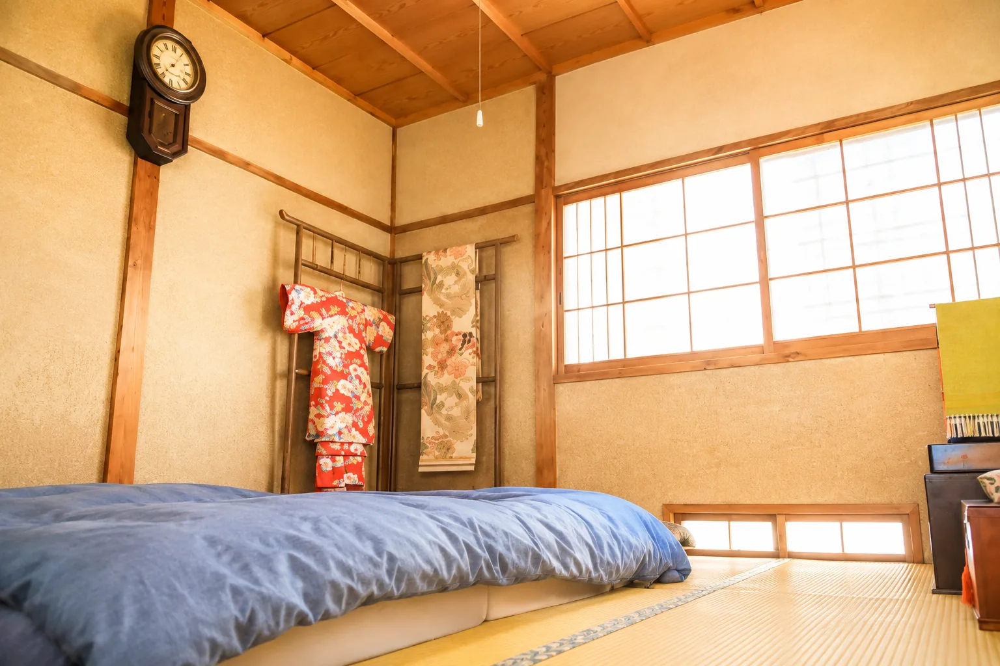

A small confession about tradition, comfort, and what we actually
sleep on at home.
Futon bedding prepared in the tatami room at The Showa House.
From Taka’s Notebook
Guests sometimes ask me, “Do you sleep on a futon every night?”
The answer is… not exactly.
I enjoy hiking and camping, so I am used to sleeping in a sleeping bag. A futon does not trouble me for a few nights.
At home, however, my whole family sleeps with mattresses. And for guests from overseas who are not accustomed to futons, sleeping on one by itself every night may be harder than expected.
That is why we combine the futon at The Showa House with a thick, 10-centimetre mattress. I wanted to preserve the feeling of sleeping in a Japanese tatami room without asking guests to give up a comfortable night’s rest.
I hope your memories of Japan will be comfortable ones.

A futon keeps the character of a tatami room, while the mattress beneath it makes the night more comfortable.
Keeping the Feeling, Adding Comfort
When we prepared the house for guests, I did not want to recreate the past exactly. I wanted to keep the feeling of a traditional Japanese home while making sure everyone could enjoy a good night’s sleep.
That is why we place a thick, 10-centimetre mattress beneath the futon.
You still experience sleeping in a Japanese-style room. You still wake up on tatami. But you will probably sleep much better than people did fifty years ago.
You wake on tatami as morning light filters softly through the shoji screens.
Old Japan, Just a Little More Comfortable
I like to think that is one of the nice things about The Showa House. It still feels like old Japan—just a little more comfortable.
Because, in the end, I want you to remember Japan—not a sore back.